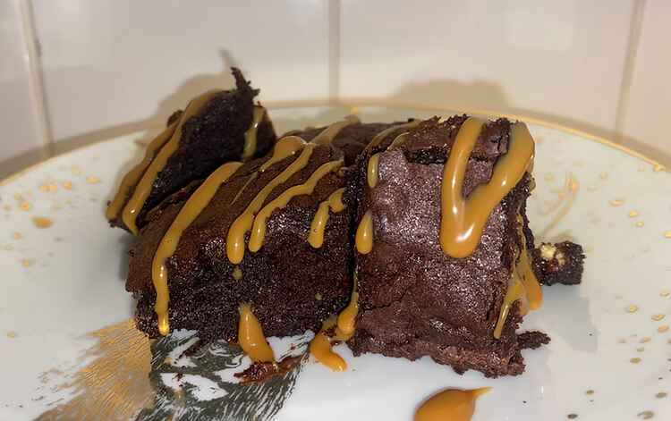

Home
Salted Caramel Brownies

Description
With the same foundation recipe as normal brownies,
this tweaked version has a brilliant combination of
sweet & salty!
Ingredients
For the brownies:
- 60g Plain Flour
- 145g Granulated Sugar
- 80g Butter, Unsalted
- 40g Cocoa Powder
- 2 Eggs
- 100g Chocolate, Chips or Chunks
- 4 tsbp canned caramel
- Mix-Ins of choice (Optional)
- 1/2 tsp Baking Powder
For the topping:
- 2tbsp canned caramel, melted slightly
- a generous sprinkle of coarse sea salt
Method
- Heat Your oven to 180C/Gas 4
- Line the tin with baking paper
- Melt the butter in a saucepan on low heat, or in the microwave
- Once your butter is entirely melted, remove from the heat and add to the cocoa powder & sugar.
- Beat the eggs in a measuring jug and add to the sugar, cocoa powder & butter,
stir thoroughly. Once eggs are incorporated add in the canned caramel, mixing
to combine and well distributed.
- Sieve the flour and baking powder into the rest of your ingredients, fold in until combined.
- Fold in your chocolate and mix-ins.
- Pour Mixture into baking tin.
- Bake for 25 - 30 Minutes until the top is crispy and the inside remains soft.
- Remove from oven and cool for a few minutes.